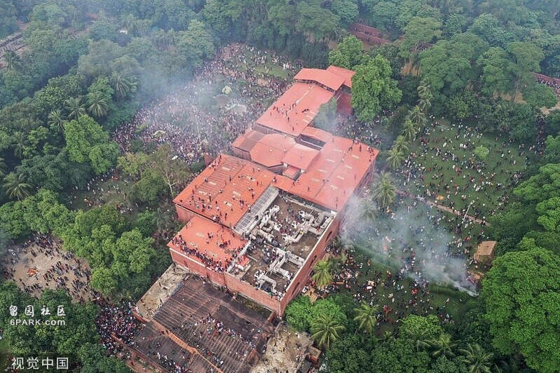

【文/观察者网 严珊珊】据香港英文媒体《南华早报》网站8月6日报道，美国南亚问题分析人士5日表示，孟加拉国总理谢赫·哈西娜突然辞职，可能对试图遏制中国在“印太地区”影响力的美国和印度构成新的战略挑战，预计两国战略会出现有限“调整”。至于哈西娜留下的权力真空，或许将由“更亲华的政治派别”来填补。
报道援引美国智库威尔逊中心南亚研究所所长迈克尔·库格尔曼（Michael Kugelman）的话称，哈西娜在持续掌权15年后下台，将为“更亲华的政治派别重新掌权提供机会”，反对党孟加拉民族主义党（BNP）有可能重新执政。孟加拉国总统5日下令释放孟加拉国前总理卡莉达·齐亚，印度新德里电视台（NDTV）称，这位反对党领袖有可能再次谋求权力，不过此前她的健康状况很差。
美国智库外交关系协会南亚和东南亚问题高级研究员约书亚·库兰齐克（Joshua Kurlantzick）认为，孟加拉国的伊斯兰组织也是不可忽视的力量。
上海国际问题研究院南亚研究中心主任兼中国研究中心（孟加拉国）中方主任刘宗义告诉观察者网，在大国战略平衡问题上，由于美西方一直对哈西娜政府持批评和打压态度，因此哈西娜政府在尽力维持与美西方关系的同时，也不惮于揭露美西方对其施加的压力，一个重要原因是印度没有和美西方站在一起。

当地时间2024年8月5日，孟加拉国首都达卡陷入混乱，反政府抗议者占领总理官邸。 视觉中国
“已致数百人死亡”，抗议组织者希望诺贝尔和平奖得主出任临时政府首席顾问
今年6月，孟加拉国政府试图恢复“公务员配额制度”，把部分公务员职位预留给“自由斗士”（即参加1971年孟加拉国解放战争的老兵）及其后代等特定人群，在该国青年中引起强烈反弹。抗议持续数周，演变成暴力事件，示威民众闯入总理府邸。
当地时间8月5日下午，孟加拉国陆军参谋长瓦克-乌兹-扎曼（Waker-Uz-Zaman）发表全国讲话，证实总理哈西娜辞职，军方将要求组建临时政府。美联社称，哈西娜及其妹妹已乘坐军用直升机离开孟加拉国，抵达印度境内。
有报道称，席卷孟加拉国的暴力事件已致数百人死亡，具体数字尚待核实，各方说法不一。孟加拉国内政部长阿萨杜扎曼·汗·卡马尔称，暴力事件导致150人丧生；美联社则援引该国孟加拉语媒体《曙光日报》（Prothom Alo）消息称，自7月15日冲突升级以来，已有211人死亡，数千人受伤；路透社称，大约有300人死亡。
据英国《卫报》报道，孟加拉国陆军参谋长定于北京时间8月6日14时会见学生抗议领袖。6日早些时候，抗议组织者表示，他们希望84岁的孟加拉国经济学家、诺贝尔和平奖得主穆罕默德·尤努斯（Muhammad Yunus）担任临时政府首席顾问，并称尤努斯已经答应了他们的邀请。
抗议组织者6日要求解散议会，并警告称，如果当地时间8月6日15时（北京时间17时）前议会没有解散，他们将启动一项“严格的计划”，并呼吁抗议者们做好准备。
当地时间2024年8月5日，孟加拉国达卡，孟加拉国总理哈西娜宣布辞职并离境后，抗议者爬上“国父”拉赫曼的雕像。 IC Photo
当地时间8月5日，在哈西娜下台数小时后，孟加拉国总统穆罕默德·谢哈布丁·楚普下令释放孟加拉国前总理卡莉达·齐亚。印度新德里电视台（NDTV）称，作为执政党孟加拉人民联盟（简称“人盟”）领导人的劲敌，孟加拉民族主义党领导人齐亚有可能再次谋求权力。
齐亚在1991-1996年和2001-2006年两度出任孟加拉国总理，是该国首位女总理，也是该国前总统齐亚·拉赫曼的遗孀。担任总理期间，她曾多次访华。
齐亚于2006年辞职，一年后因腐败被捕。孟加拉国反贪委员会指认齐亚等人在齐亚孤儿院信托基金运营过程中有贪污行为。2018年，齐亚因贪污罪被判17年监禁。但这位孟加拉国前总理的健康状况很差，大部分时间都在医院接受治疗。
据孟加拉国媒体报道，本月将满79岁的齐亚患有肝硬化、糖尿病、关节炎，今年6月还安装了心脏起搏器，7月2日刚出院，在家休养。
资料图：孟加拉国前总理卡莉达·齐亚孟加拉国媒体Dhaka Tribune
“美国和印度近期保持接触，彼此通报与孟对话进展”
威尔逊中心南亚研究所所长库格尔曼认为，无论地区局势如何发展，美国和印度“在对抗中国方面保持着核心战略利益”，但他指出，美印“肯定需要加强接触和讨论”。
他预计两国战略会出现“调整”，而不是“重大变化”，并补充称，“目前美国对南亚的整个战略框架都是通过印太战略的视角构建的”，而且美国将孟加拉国视为其在该地区战略中的关键参与者。
库格尔曼称：“可以肯定的是，在孟加拉国发生政治危机期间，美国和印度一直在进行接触、磋商，彼此通报各自与孟加拉国可能进行的对话。”
在孟加拉国发生政变后，美国国务院发言人马修·米勒8月5日呼吁孟加拉国建立“民主秩序”，宣称美国看到军队拒绝执行镇压抗议者的命令，“如果那些报道是真的，我们当然鼓励这样做”。
米勒还称，美国希望看到孟加拉国人民选择自己的政府。
1947年出生的谢赫·哈西娜系孟加拉开国总统穆吉布·拉赫曼的长女，自20世纪80年代起担任孟加拉人民联盟主席。曾于1996-2001年出任孟加拉国总理。2008年12月30日，孟举行第九届议会选举，人盟领导的大联盟胜出，哈西娜再度执政，此后一直连任，2024年第五次出任孟加拉国总理。
《南华早报》提到，哈西娜在任期内与中国保持着友好关系。
上海国际问题研究院南亚研究中心主任兼中国研究中心（孟加拉国）中方主任刘宗义指出，过去十多年，中国在孟加拉国经济社会发展方面提供了大量支持，特别是在一些大型基础设施建设项目上，不仅提供资金，也提供技术，为孟加拉国消除了大量发展瓶颈的阻碍。
与此同时，孟加拉国重视改善和发展与印度的关系，哈西娜与印度总理莫迪的友谊拉近了两国的距离。今年6月，她两周内两次赴印度；去年9月，二十国集团（G20）新德里峰会举行期间，东道主莫迪邀请哈西娜（孟加拉国非G20成员国）参会。
孟加拉国和印度也有历史渊源。1947年印巴分治，孟加拉划归巴基斯坦（称“东巴”）。在印度的支持下，1971年3月东巴宣布独立，1972年1月正式成立孟加拉人民共和国。
此外，孟加拉国政府为摆脱贫困，还积极谋求发展同美国的关系。但《南华早报》提到，近年来，美国一直批评哈西娜“日益专制的统治和对反对党的镇压”。2023年5月，美国以支持孟加拉国举行自由、公平的选举为由，宣布对破坏孟加拉国民主选举进程的人实施签证限制措施。
不过，由于印度方面坚持认为孟加拉国在“印太地区”扮演着关键角色，美方尚未采取其他具体行动。
当地时间2024年8月5日，孟加拉国达卡，孟加拉国总理哈西娜宣布辞职并离境后，抗议者爬上“国父”拉赫曼的雕像。 IC Photo
刘宗义告诉观察者网，在大国战略平衡问题上，由于美西方一直对哈西娜政府持批评和打压态度，特别是在大选之前向哈西娜施加了很大压力，因此哈西娜政府在尽力维持与美西方关系的同时，也不惮于揭露美西方对其施加的压力，一个重要原因是印度没有和美西方站在一起。印度能够从外部影响哈西娜政府政治安全和稳定，同时也能够在其国内发生政治动荡时为哈西娜及其政府高官提供政治庇护。
《南华早报》援引库格尔曼的说法称，在孟加拉国重新举行大选前，美国和印度看到了在孟加拉国问题上更多的共同利益，“美国实际上变得安静了”。
报道称，在“对抗中国”方面，拜登政府一直致力于让印度跟自己的立场趋于一致，这意味着随着孟加拉国局势发生变化，美国需要与莫迪保持一致，并在政策改变上做有限的调整。
美国智库亚洲协会政策研究所南亚倡议主任法瓦·阿梅尔（Farwa Aamer）表示，美国可以更依赖印度，将其视为南亚地区的关键合作伙伴，这意味着会更多“延续现有政策，而非重大转变”。
“孟加拉国外交政策的任何潜在变化都可能产生影响，”阿梅尔补充称，“一旦新政府上台，在孟加拉国拥有既得利益的全球和地区性力量必须考虑一切可能结果和战略回应。”
虽然孟加拉国军方承诺在举行选举后组建临时政府，但美国智库外交关系协会南亚和东南亚问题高级研究员约书亚·库兰齐克（Joshua Kurlantzick）认为，孟加拉国军方长期“干预政治”，“这次他们不一定会离开”。
库兰奇克还认为，势力日益增强和壮大的伊斯兰组织也将是孟加拉国一股不可忽视的力量，“他们也非常危险”。